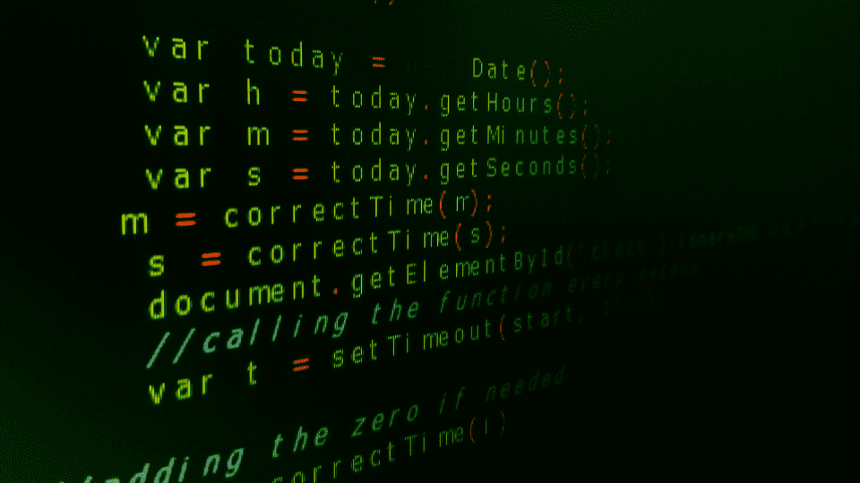

Explorando o Mundo do Desenvolvimento Web: Front-End, Back-End e Full-Stack
No mundo do desenvolvimento web, há três principais áreas de especialização: Front-End, Back-End e Full-Stack. Cada uma desempenha um papel crucial na criação de sites e aplicações web, mas suas responsabilidades e habilidades diferem significativamente. Vamos explorar o que cada uma dessas áreas envolve e como elas se complementam.
Front-End Development
O Front-End Development é a área responsável pela interface do usuário e a experiência do usuário (UI/UX). Os desenvolvedores front-end trabalham na parte do site que os usuários veem e interagem diretamente. Eles utilizam tecnologias como HTML, CSS e JavaScript, além de frameworks e bibliotecas como React, Angular e Vue.js. As principais responsabilidades dos desenvolvedores front-end incluem:
- Design e Layout: Criar a estrutura visual e o layout do site, garantindo que seja atraente e fácil de usar.
- Responsividade e Acessibilidade: Assegurar que o site funcione bem em diferentes dispositivos e seja acessível a todos os usuários.
- Interatividade: Desenvolver elementos interativos, como menus, botões e formulários, que respondem às ações do usuário.
Back-End Development
O Back-End Development se refere à parte do desenvolvimento web que lida com o lado do servidor. Esta área é responsável pela lógica, banco de dados, autenticação e outras funcionalidades essenciais que não são visíveis para os usuários finais. Desenvolvedores back-end usam linguagens como Java, Python, Ruby, PHP e Node.js, além de bancos de dados como MySQL, PostgreSQL e MongoDB. Suas responsabilidades principais incluem:
- Lógica do Servidor: Desenvolver e manter a lógica do servidor que gerencia o fluxo de dados e a interação entre o servidor e o cliente.
- Gerenciamento de Bancos de Dados: Projetar, implementar e manter bancos de dados que armazenam as informações do site.
- Segurança e Autenticação: Garantir que o site seja seguro e que os usuários possam se autenticar e acessar suas informações de maneira segura.
Full-Stack Development
O Full-Stack Development combina as habilidades de front-end e back-end, permitindo que um desenvolvedor trabalhe em todas as partes de um projeto web. Os desenvolvedores full-stack são versáteis e capazes de lidar tanto com a interface do usuário quanto com a lógica do servidor. Eles utilizam uma combinação das tecnologias de front-end e back-end mencionadas anteriormente. Suas responsabilidades incluem:
- Desenvolvimento Completo: Criar e manter tanto o lado do cliente quanto o lado do servidor de uma aplicação web.
- Integração de Sistemas: Assegurar que o front-end e o back-end funcionem harmoniosamente juntos.
- Versatilidade: Adaptar-se a diferentes aspectos do desenvolvimento web conforme necessário, desde o design de UI/UX até a implementação de APIs e gerenciamento de servidores.
Tem interesse na área de programação?
Se você tem interesse na área e quer se aprofundar mais na área você pode acessar os links abaixo.